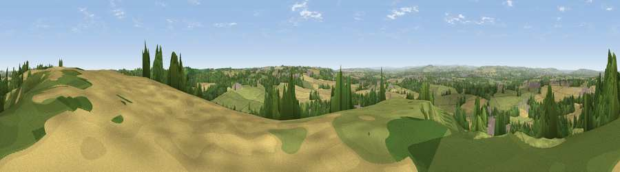

Viewpoint near High Pittington
#13080 in England · top 22% of its area beats it · near High PittingtonThe view, rendered

A 360° render of this exact spot computed from the terrain model, tree cover and land cover — summer colours, afternoon light, calibrated against photographs of famous viewpoints. Real trees, hedges and buildings will differ in detail.
The panorama
Grey silhouette: terrain skyline in each direction (720 bearings, Earth curvature and refraction included). Dashed green: skyline with trees (+15 m) and buildings (+8 m) as obstacles. Blue strip: how far the ground is visible on each bearing.
Where the view opens
Wedge length = distance to the farthest visible ground on that bearing (vegetation-aware). Rings at 10, 25 and 50 km.
What fills the view
36% cropland · 35% grassland · 22% woodland · 7% built-up
Angular shares of the visible panorama (visual magnitude), not map area. Landscape diversity 0.56 (0–1 Shannon).
Key numbers
More beautiful places nearby
The staircase of upgrades: each row has a higher view potential than everything closer. Driving times are estimates from straight-line distance, calibrated against real road routing — check an actual route before setting out.
| Place | Direction | Drive | Score |
|---|---|---|---|
| Viewpoint near High Pittington | NNE · 1 km | ~3 min | 60.6 |
| Cobbler's Hill | NNE · 1 km | ~3 min | 64.8 |
| Lily Hill | ESE · 4 km | ~8 min | 65.6 |
| Viewpoint near Cassop | SSE · 5 km | ~11 min | 66.3 |
| Viewpoint near Bowburn | S · 6 km | ~13 min | 69.0 |
| Viewpoint near Quarrington Hill | S · 6 km | ~14 min | 73.1 |
| Viewpoint near Houghton-le-Spring | NNE · 7 km | ~15 min | 73.7 |
| Viewpoint near Houghton-le-Spring | NE · 7 km | ~15 min | 76.0 |
54.79497, -1.48555 · source: screening · position refined by local search. Computed location — check access rights before visiting.